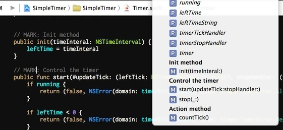

在 Objective-C 中，我们经常在代码中插入 #param 符号来标记代码的区间，这样在 Xcode 的导航栏中我们就可以看到组织分块后的方法列表。这在单个文件方法较多的时候进行快速定位非常有用。
在 Swift 中也有类似的方式，我们可以在代码合适的地方添加 // MARK: 这样的标记 (注意大写)，并在后面接上名称，Xcode 将在代码中寻找这样的注释，然后以粗体标签的形式将名称显示在导航栏中。比如：

另外我们还可以在冒号的后面加一个横杠 -，这样在导航中会在这个位置再多显示一条横线，隔开各个部分，会显得更加清晰。
除了 // MARK: 以外，Xcode 还支持另外几种标记，它们分别是 // TODO: 和 // FIXME:。和 MARK 不同的是，另外两个标记在导航栏中不仅会显示后面跟着的名字或者说明，而且它们本身也会被显示出来，用来提示还未完成的工作或者需要修正的地方。这样在阅读源代码时首先看一看导航栏中的标记，就可以对当前文件有个大致的了解了。
以前在 Objective-C 中还有一个很常用的编译标记，那就是 #warning，一个 #warning 标记可以在 Xcode 的代码编辑器中显示为明显的黄色警告条，非常适合用来提示代码的维护者和使用者需要对某些东西加以关注。这个特性当前的 Swift 版本里还没有对应的方案。希望 Apple 能在接下来的版本中会加入一些类似的标记，像这个样子：
// WARNING: Add your API key here
很遗憾，暂时没有可以在编译时像 #warning 那样生成警告的方法了。